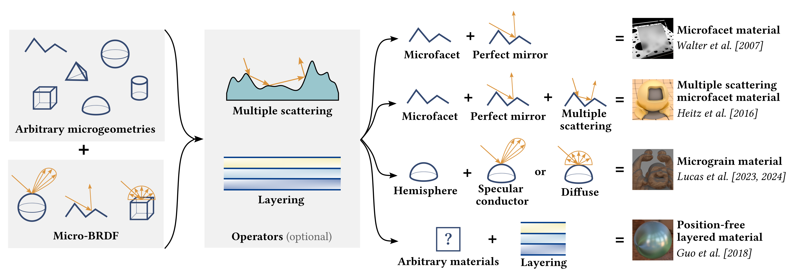
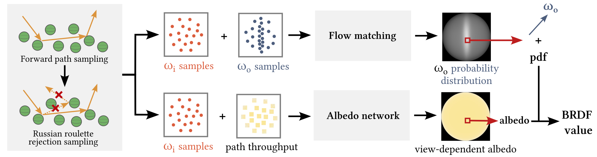
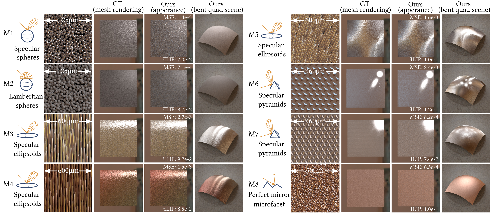

PureSample: Neural Materials Learned by Sampling Microgeometry
Abstract
Traditional physically-based material models rely on analytically derived bidirectional reflectance distribution functions (BRDFs), typically by considering statistics of micro-primitives such as facets, flakes, or spheres, sometimes combined with multi-bounce interactions such as layering and multiple scattering. These derivations are often complex and model-specific. Once an analytic BRDF evaluation is defined, one still needs to design an importance sampling method for it and evaluate the probability density function (pdf) of that sampling distribution, requiring further model-specific derivations. We present PureSample: a novel neural BRDF representation that allows learning a material's appearance purely by sampling forward random walks on the microgeometry, which is usually straightforward to implement. Our representation allows for efficient BRDF evaluation, importance sampling, and pdf evaluation, for homogeneous as well as spatially varying materials. We achieve this by two learnable components: first, the sampling distribution is modeled using a flow matching neural network, which allows both importance sampling and pdf evaluation; second, we introduce a view-dependent albedo term, captured by a lightweight neural network, which allows for converting a pdf value to a BRDF value for any pair of view and light directions. We demonstrate PureSample on challenging materials, including various microgeometries, multi-layered materials, and multiple-scattering microfacet materials.
Physically-based Material Definition

Our Framework

Results

BibTeX
@inproceedings{Li:2026:PureSample,
title={PureSample: Neural Materials Learned by Sampling Microgeometry},
author={Zixuan Li and Zixiong Wang and Jian Yang and Milo\v{s} Ha\v{s}an and Beibei Wang},
booktitle={ACM SIGGRAPH Conference Papers},
year={2026},
doi={10.1145/3799902.3811156},
image={/static/img/posts/Teaser_puresample.png},
html={/paper_pages/PureSample/},
arxiv={2508.07240},
}